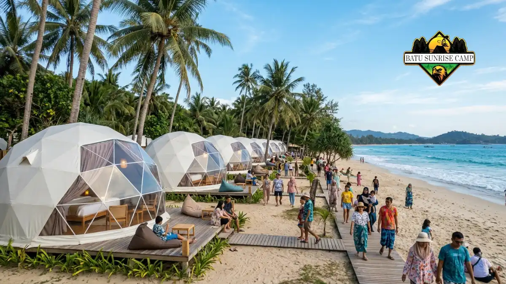

Biaya sewa tenda glamping dome pantai ditentukan oleh lokasi, musim, kapasitas, fasilitas, dan paket tambahan, sehingga tarif tiap penyedia dapat sangat berbeda.
- Tarif tidak seragam karena setiap penyedia menawarkan lokasi, fasilitas, dan paket yang berbeda.
- BPS mencatat perjalanan wisatawan nusantara Juli 2026 sebanyak 107,44 juta perjalanan, sehingga permintaan tinggi memengaruhi tarif musim ramai.
- Total biaya sebaiknya dihitung dari harga dasar, pajak, biaya layanan, dan paket tambahan.
- Harga yang jauh lebih murah dari pasar perlu diverifikasi sebelum membayar.
Apa Saja Komponen yang Membentuk Biaya Sewa Glamping Dome Pantai?
Komponen biaya sewa glamping dome pantai terdiri dari tarif dasar per malam, pajak dan biaya layanan, tambahan tamu, serta paket makanan atau aktivitas.
Tarif dasar per malam mencerminkan tipe dome, ukuran, dan kelengkapan fasilitas. Dome dengan kamar mandi dalam, pendingin ruangan, dan pemandangan laut langsung umumnya lebih mahal daripada tipe sederhana dengan kamar mandi bersama.
Komponen lain meliputi pajak daerah, biaya layanan, dan biaya tambahan untuk tamu ekstra atau kasur tambahan.
Penyedia juga sering menawarkan paket sarapan, barbeku, api unggun, dekorasi, atau antar jemput. Setiap paket dihitung terpisah, sehingga penyewa perlu meminta rincian tertulis agar tidak ada biaya yang terlewat.
Mengapa Harga Sewa Naik pada Musim Liburan?
Harga sewa glamping dome pantai naik pada musim liburan karena permintaan meningkat sementara jumlah dome di setiap lokasi terbatas, sehingga penyedia menerapkan tarif musim ramai.
Menurut BPS, perjalanan wisatawan nusantara pada Juli 2026 mencapai 107,44 juta perjalanan, tumbuh 7,23 persen secara tahunan.
BPS juga menyebut capaian perjalanan wisatawan nusantara Januari sampai Juni 2026 sebagai yang tertinggi sejak 2019.
Kondisi ini menggambarkan besarnya arus perjalanan domestik yang bersaing memperebutkan akomodasi wisata.
Penyedia glamping umumnya mengelompokkan tarif menjadi tarif hari kerja, akhir pekan, dan libur panjang atau musim puncak.
Menginap pada hari kerja atau di luar musim puncak biasanya memberi tarif lebih rendah, namun ketentuan ini berbeda di tiap penyedia.

Keramaian wisatawan di akomodasi glamping dome tepi pantai saat musim liburan yang memicu naiknya tarif akibat tingginya permintaan.
Bagaimana Cara Menghitung Total Biaya Menginap?
Cara menghitung total biaya menginap adalah menjumlahkan tarif per malam, pajak, biaya layanan, tamu tambahan, dan seluruh paket pilihan, lalu mengalikannya dengan jumlah malam.
Gunakan pola sederhana berikut. Total biaya sama dengan tarif per malam dikali jumlah malam, ditambah pajak dan biaya layanan, ditambah tamu tambahan, ditambah paket makanan atau aktivitas, ditambah biaya transportasi pribadi ke lokasi.
Minta penyedia menuliskan angka akhir yang harus dibayar, bukan hanya harga dasar. Cantumkan juga jumlah uang muka, tanggal pelunasan, dan nilai yang dapat dikembalikan bila pemesanan dibatalkan. Dengan begitu penyewa dapat membandingkan beberapa penawaran dengan angka yang setara.
Biaya Tambahan Apa yang Sering Tidak Terlihat?
Biaya tambahan yang sering tidak terlihat dalam sewa glamping dome pantai meliputi biaya tamu ekstra, parkir, listrik tambahan, pembersihan, denda kerusakan, dan layanan antar jemput.
- Tamu atau kasur tambahan. Tarif dasar biasanya berlaku untuk jumlah tamu tertentu.
- Parkir dan tiket masuk kawasan. Sebagian pantai memungut tiket masuk terpisah dari tarif dome.
- Biaya pembersihan atau kerusakan. Beberapa penyedia menetapkan deposit atau denda bila ada kerusakan.
- Layanan makan dan barbeku. Bahan, arang, dan peralatan dapat dihitung per paket.
- Transportasi dan antar jemput. Lokasi terpencil sering membutuhkan kendaraan khusus.
Menanyakan seluruh poin ini sebelum memesan membantu penyewa menyusun anggaran yang realistis.
Bagaimana Membandingkan Tarif Antar Penyedia secara Adil?
Membandingkan tarif antar penyedia secara adil berarti menyamakan jumlah tamu, tanggal, tipe dome, fasilitas, dan paket tambahan sebelum menilai mana yang lebih hemat.
Buat daftar pembanding dengan kriteria yang sama: jarak dome ke pantai, jenis kamar mandi, pendingin ruangan, sarapan, kebijakan pembatalan, dan total harga akhir. Dua penawaran dengan angka berbeda dapat sebanding bila yang lebih mahal sudah mencakup sarapan dan transportasi.
Perhatikan juga reputasi penyedia dan ulasan penyewa sebelumnya. Harga lebih rendah tidak selalu menguntungkan bila fasilitas tidak sesuai deskripsi atau layanan kurang responsif. Pilih penawaran dengan nilai terbaik untuk kebutuhan, bukan sekadar angka terkecil.
Bagaimana Cara Menghemat Biaya Tanpa Mengorbankan Kenyamanan?
Cara menghemat biaya sewa glamping dome pantai adalah menginap di luar musim puncak, memesan lebih awal, memilih paket sesuai kebutuhan, dan menanyakan promo resmi.
- Pilih hari kerja. Tarif hari kerja umumnya lebih rendah daripada akhir pekan atau libur panjang.
- Pesan jauh hari. Pemesanan awal membuka lebih banyak pilihan tipe dan tanggal.
- Sesuaikan paket. Ambil paket makanan hanya bila memang diperlukan.
- Patungan dalam rombongan. Dome berkapasitas besar dapat lebih efisien untuk keluarga besar atau kelompok teman.
- Tanyakan promo resmi. Beberapa penyedia memberi potongan untuk menginap lebih dari satu malam.
Hemat tidak berarti mengorbankan keselamatan. Jangan memilih penyedia hanya karena tarifnya paling rendah tanpa memeriksa keamanan dan reputasinya.
Apa Risiko dari Harga yang Terlalu Murah?
Risiko harga glamping dome pantai yang terlalu murah meliputi fasilitas tidak sesuai deskripsi, perawatan kurang, keamanan minim, dan potensi penipuan pemesanan.
Harga jauh di bawah pasar dapat menandakan fasilitas terbatas atau kondisi dome kurang terawat. Dalam kasus tertentu, penawaran semacam itu juga dipakai untuk menjaring uang muka dari calon penyewa yang kurang waspada.
Lakukan verifikasi sederhana: minta foto atau video terbaru, periksa akun media sosial dan ulasan yang konsisten, serta gunakan rekening atas nama penyedia atau bisnis yang jelas. Panduan lebih lengkap tersedia dalam cara memilih vendor sewa glamping dome pantai dan prosedur pemesanan.
Bagaimana Kebijakan Pembayaran dan Pembatalan Memengaruhi Biaya?
Kebijakan pembayaran dan pembatalan memengaruhi biaya karena uang muka, jadwal pelunasan, dan aturan pengembalian dana menentukan berapa uang yang berisiko hilang bila rencana berubah.
Banyak penyedia meminta uang muka untuk mengunci jadwal dan pelunasan sebelum atau saat check-in.
Beberapa memberi opsi penjadwalan ulang bila cuaca ekstrem, sementara yang lain tidak mengembalikan uang muka sama sekali.
Baca ketentuan ini sebelum membayar, dan simpan bukti tertulisnya. Bila rencana perjalanan rentan berubah, pilih penyedia dengan kebijakan penjadwalan ulang yang lebih fleksibel meski tarifnya sedikit lebih tinggi. Gambaran umum layanan ini tersedia di panduan sewa tenda glamping dome pantai.
Kesimpulan
- Biaya sewa tenda glamping dome pantai dipengaruhi lokasi, musim, tipe dome, fasilitas, dan paket tambahan.
- Hitung total biaya dari seluruh komponen, bukan hanya harga dasar per malam.
- Bandingkan penawaran dengan kriteria yang sama agar hasilnya adil.
- Waspadai harga yang jauh di bawah pasar dan verifikasi penyedia sebelum membayar.
- Baca kebijakan pembayaran dan pembatalan sebelum mengirim uang muka.
FAQ